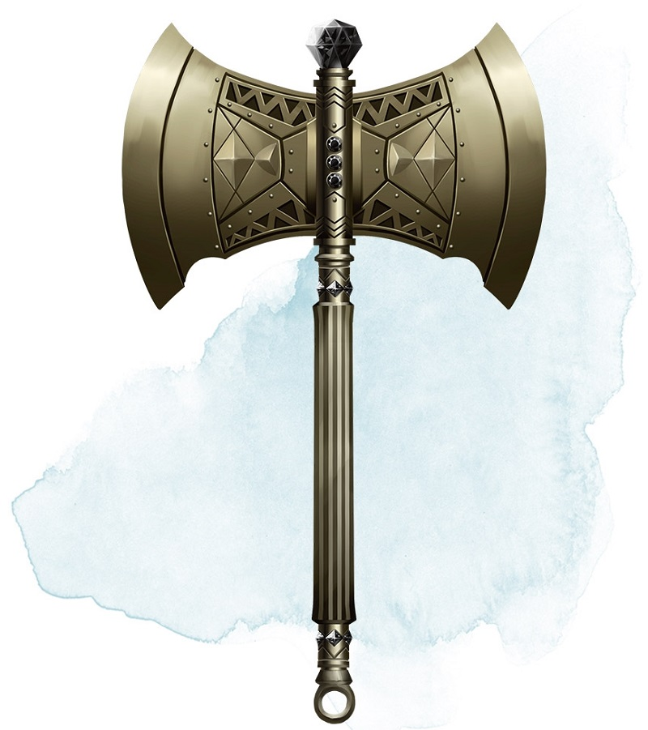

Berserker Axe
Weapon (any axe), rare (requires attunement)
You gain a +1 bonus to attack and damage rolls made with this magic weapon. In addition, while you are attuned to this weapon, your hit point maximum increases by 1 for each level you have attained.
Curse. This axe is cursed, and becoming attuned to it extends the curse to you. As long as you remain cursed, you are unwilling to part with the axe, keeping it within reach at all times. You also have disadvantage on attack rolls with weapons other than this one, unless no foe is within 60 feet of you that you can see or hear.
Whenever a hostile creature damages you while the axe is in your possession, you must succeed on a DC 15 Wisdom saving throw or go berserk. While berserk, you must use your action each round to attack the creature nearest to you with the axe. If you can make extra attacks as part of the Attack action, you use those extra attacks, moving to attack the next nearest creature after you fell your current target. If you have multiple possible targets, you attack one at random. You are berserk until you start your turn with no creatures within 60 feet of you that you can see or hear.
Curse. This axe is cursed, and becoming attuned to it extends the curse to you. As long as you remain cursed, you are unwilling to part with the axe, keeping it within reach at all times. You also have disadvantage on attack rolls with weapons other than this one, unless no foe is within 60 feet of you that you can see or hear.
Whenever a hostile creature damages you while the axe is in your possession, you must succeed on a DC 15 Wisdom saving throw or go berserk. While berserk, you must use your action each round to attack the creature nearest to you with the axe. If you can make extra attacks as part of the Attack action, you use those extra attacks, moving to attack the next nearest creature after you fell your current target. If you have multiple possible targets, you attack one at random. You are berserk until you start your turn with no creatures within 60 feet of you that you can see or hear.
Dungeon Master´s Guide (SRD)
